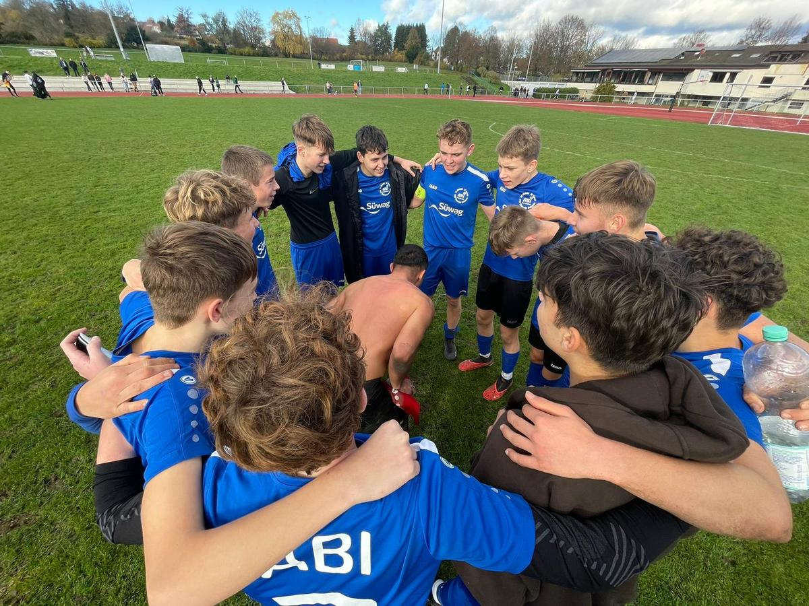

SGM-ABI B-Jugend bei der SGM Sülzbach/Sulmtal Bezirkspokal
Mit dem Achtelfinale Im Bezirkspokal, sowie dem letzten Spiel in der Liga standen zwei wichtige Spiele an. Für beide Spiele mussten wir leider auf Stammspieler verzichten, Krankheitsbedingt, Klassenfahrt, und wir waren daher sehr froh das wir dann in den Spielen teilweise auf Spieler unserer C-Jugend zurückgreifen konnten.
Am Mittwoch 15.11 spielten wir im Achtelfinale des Bezirkspokals bei der SGM Sülzbach/Sulmtal. Am Ende haben wir 5:2 verloren, das sieht deutlich aus, aber so war nicht der Spielverlauf. Wetterbedingt war das Sportgelände schwer durchnässt, tiefer Rasen (vermutlich schon einige Wochen nicht gemäht), das machte es uns selbst schwer. Die SGM Sülzbach stürmte massiv in den Ersten 15 Min., und wir konnten uns noch nicht richtig sortieren. So ging die Führung für Sülzbach nach 9 Min auch in Ordnung. Nach dem 2:0 fanden wir besser ins Spiel hatten viel Abschlussmöglichkeiten und erzielten auch das 2:1. So ging es in die Halbzeit. Wir dominierten von dann das Spiel waren aber einmal nachlässig kassierten das 3.1 und es ging noch 15 Min, ab diesem Zeitpunkt Angriff auf Angriff konnten das 3:2 erzielen, da nur noch wenige Minuten zu Spielen waren machten wir vollkommen auf, und kassierten dann leider noch das 4 und 5:2.
Schade Männer Pokalrunde ist jetzt für uns vorbei.
SGM – ABI B-Jugend TSV Weinsberg 0:1
Es gibt nicht viel zu schreiben, nur eines 1:0 gewonnen. Aufgrund verletzungsbedingter Ausfälle bzw. Krankheit, hatten wir am vergangenen Sonntag 4 C Jugendspieler mit im Einsatz. Aus der Erfahrung im Pokalspiel wussten wir das Weinsberg kein angenehmer Gegner ist und so lief auch das Spiel. Spielerisch waren wir über 80 Min. das bessere Team, aber Weinsberg haute kämpferisch alles raus was ging. Auch haben Sie, da muss man so offen sein, einen der Besten Torhüter in unserer Qualifikationsstaffel.
Fassen wir es zusammen die besseren Torchancen lagen auf unserer Seite, aber Weinsberg war immer gefährlich, aber am Ende reichte es als Jaris in der 79 Min das 1:0 für uns erzielen konnte. Glückwunsch Männer, im Frühjahr spielen wir somit in der Leistungsstaffel.